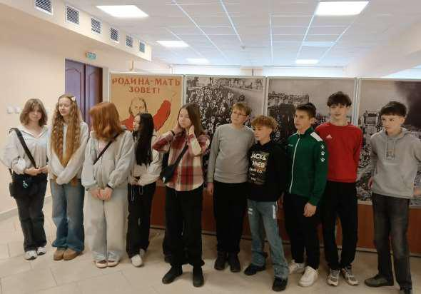
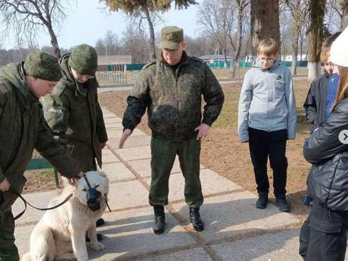
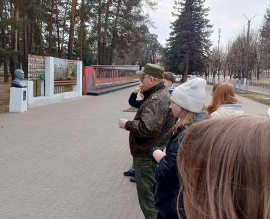

ЕСТЬ УРОКИ, КОТОРЫЕ ПРОХОДЯТ В КЛАССЕ, А ЕСТЬ ТЕ, ЧТО ОСТАЮТСЯ В СЕРДЦЕ
На весенних каникулах наш 7 «Г» класс посетил легендарный 72-й гвардейский учебный центр (военный городок Печи). Для многих школьников это было первое знакомство с настоящей армейской жизнью изнутри.

Аллея Героев. Офицеры рассказали о подвигах Великой Отечественной и истории 6-й гвардейской стрелковой дивизии. Оказывается, название «Печи» хранит в себе почти столетнюю тайну!
Музей части. Ребята увидели уникальные экспонаты: от документов военных лет до образцов вооружения. История ожила прямо на глазах.

Кинологическая служба. Самый яркий момент! Семиклассники узнали, как готовят военных собак, и даже пообщались с четвероногими бойцами.
Многие из ребят впервые попали на территорию действующей части. После экскурсии разговоры были только об одном: о службе, о Родине и о будущем. Некоторые уже задумались о военной карьере! Такие встречи важны. Когда историю можно потрогать руками, она запоминается навсегда.
